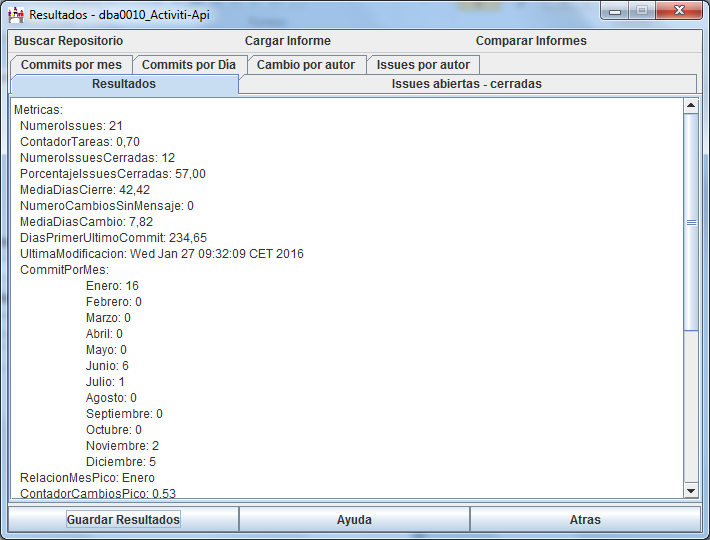
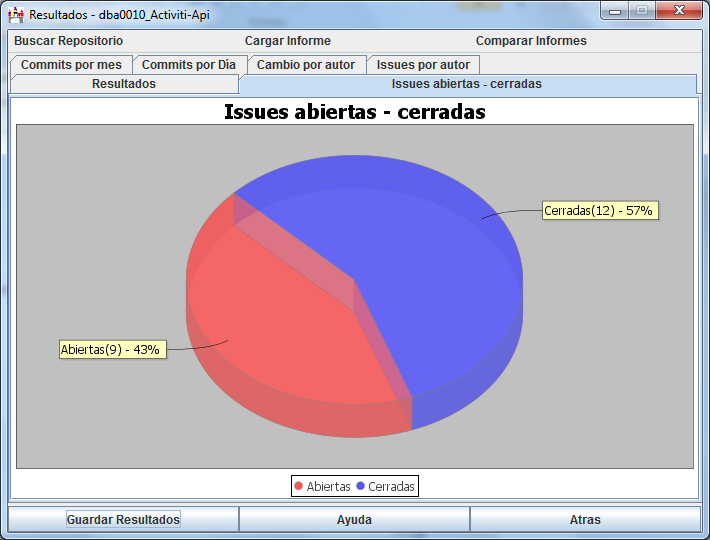
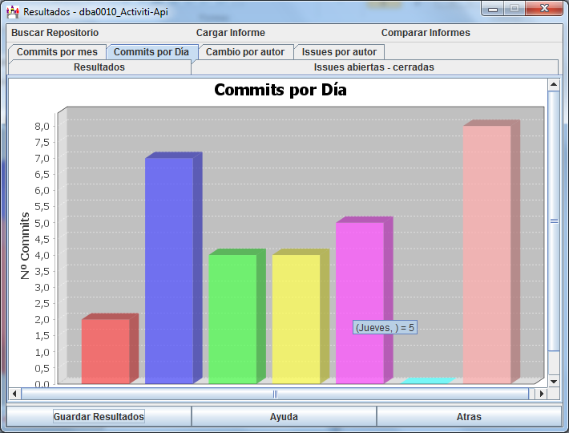

En esta pantalla se muestran los resultados de las métricas realizadas con los datos obtenidos del repositorio seleccionado.
En esta pantalla podemos guardar los resultados en un archivo para cargarlos directamente en otra ocasión.
La informacion se muestra en distintos paneles, en el panel por defecto se muestra una lista con los valores de todas las métricas calculadas en modo texto.

En otro panel se muestra un grafico circular que representa las issues cerradas frente a las abiertas.

Existen otros cuatro paneles que muestran gráficos de barras que representan los commits realizados por mes, por día y por autor y las issues por autor.
